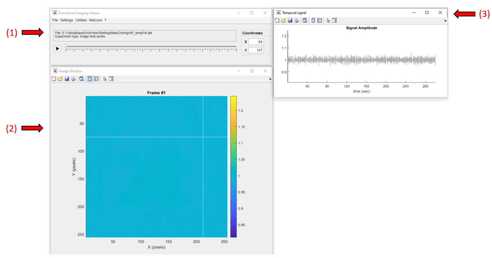
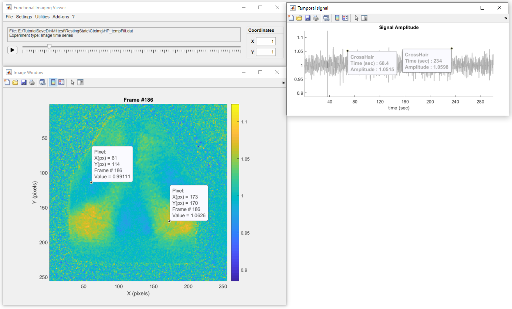

In this tutorial, we will explore an intermediate step from the preproceesing of a resting state experiment. The data consists of the fluorescence signal that was corrected for the hemodynamic artifacts, followed by the removal of the global signal variance and temporally filtered and normalized.
Below is a screenshot of the app with the data loaded. It consists of three windows: the main window (1), where all the options and controls are located, the image window (2) where the current frame of the data is shown, and the temporal signal window (3) where the temporal profile of the selected pixel is displayed.
Click on a pixel to get it's temporal profile:
To change frames, either move the slider in the main window or double-click on the plot from the temporal signal window:
Also, use the figure's datatip tool to add fixed data tips over the image or the temporal profile to show the pixel values as so:
Important
Don't forget to deactivate the datatip button before interacting with the figure. Some of the
figure's interactions are suspended when the datatip mode is active.
Now, let's adjust the color scale limits to better visualize the fluctuations of the fluorescence signal across the mouse cortex. To do so you can simply use the vertical zoom option on the temporal signal window as so:
If you want to give a precise number, go to Settings >> Image Options and change the values of min and max. In addition, we can also change the default colormap through the Image Options:
Finally, we can use the playback button to display the "movie" of the fluorescence signal. This recording was obtained with a frame rate of 5Hz (default playback speed). We can change the playback speed in Settings >> Playback speed. Below, we can observe the fluctuations of the fluorescence signal across the mouse cortical areas (playback speed at 3 times the real frame rate):